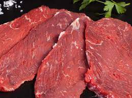

Carne de ternera: carne de las vacas o bueyes de entre 8 y 12 meses de edad, con características similares a la anterior, tierna, sabor delicado pero algo más pronunciado, todavía contiene mucha agua y por lo tanto poca grasa.En cuanto a la conservación, para que la carne sea buena tiene que estar fresca y apretada, con bastante grasa blanca. El color de la carne depende de la mioglobina, de manera que en condiciones normales el color de la carne tiene que ser rojo púrpura. Si el vacuno es de mayor edad, el color será más oscuro.En ocasiones, al poner en contacto dos superficies de corte se aprecia que la carne toma un color castaño oscuro, pero esto no afecta la calidad de la carne.El color de la grasa indica la edad del animal. Así, si es blanca, quiere decir que la carne pertenece a una res joven, y, si es amarillenta, a un animal de mayor edad.
Respecto a la conservación, la carne de ternera puede permanecer en el frigorífico
